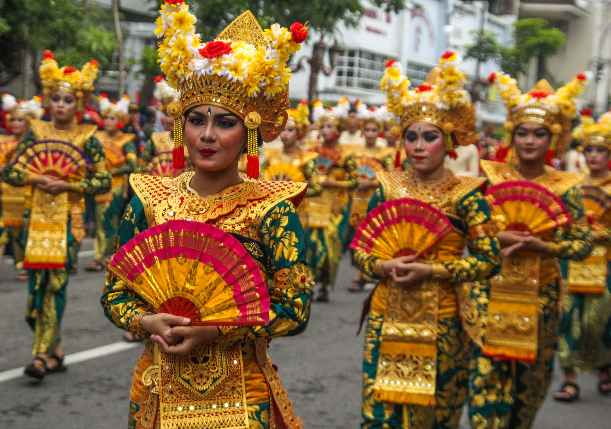
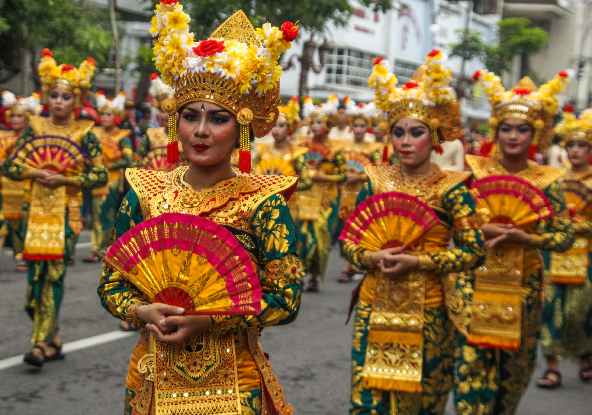
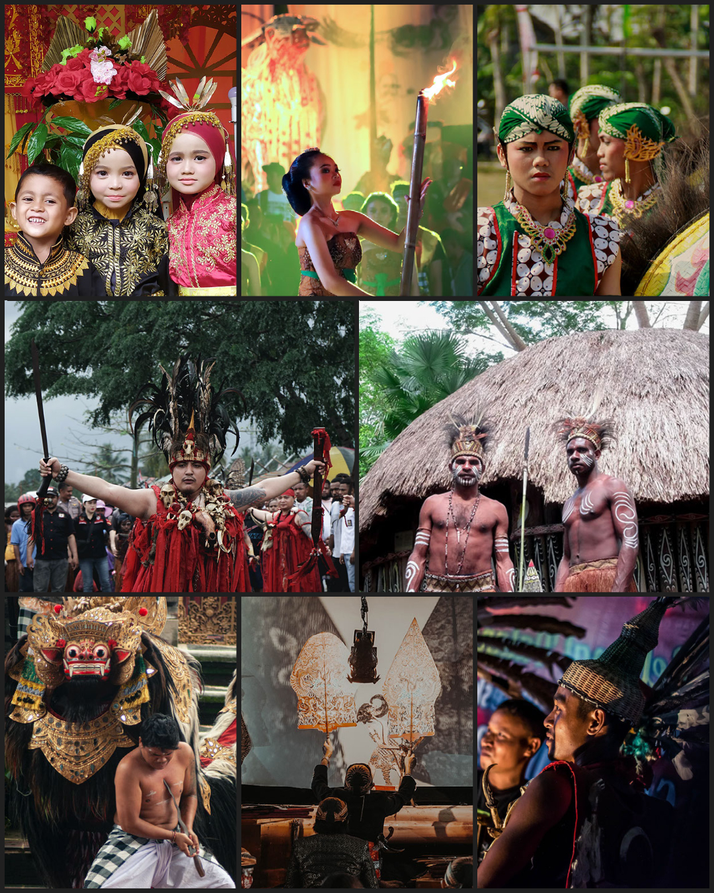

-min.jpg) 

我們的印尼
我們的文化
來探索我們群島的文化財富
向下滚动
印尼究竟是有多多樣化？
印尼是個群島國家， 每個地區獨具自己的文化特色。也因如此，這些差異帶來我國無窮無盡的文化遺產。

17.508
座島嶼
1.340
個族群
根據 ROUGH GUIDES 2019年的民意調查,
印尼被評爲第六名全球最漂亮的國家。


除了美輪美奐的風景，博大精深的文化精髓也是印尼的獨特魅力之一。
豐富多彩的風土人情、輕盈優美的傳統舞蹈、以及精美別緻的手工藝品，它們已吸引了不少國際游客的心。
由於厚重的文化底蘊，印度尼西亞的國名越來越享譽世界，對外國人來説已經很熟悉了。
多元化的印尼
不同的地區具有不同的族群和傳統，這包括所有的服飾、建築、語言、藝術等等。
-
建築
-
服飾
-
儀式
-
樂器
-
藝術品
-
舞蹈
-
武器
-
民群
-
語言
-
建築
-
服飾
-
儀式
-
樂器
-
藝術品
每個地方千差萬別的文化不應引起糾紛；只要培養寬容的態度，大家都可舉國一致地鞏固國内和平。


印尼的多樣性是世界上千金難買的禮物。 人與人之間互相尊重、不分彼此，這樣才會增強整個國家的團結感並享受到我國最美麗的祝福。
這種特殊的多樣性是我們想與世界分享的寶物。我們邀請你來認識並探索印尼的文化寶藏。

來成為我們的一份子
無論你來自何方，我們總是熱情洋溢地歡迎大家來開啓難忘的文化體驗之旅。
你可以開始參觀並欣賞當地的風土人情，甚至可以向世界各國介紹印尼文化的多元之美。
世界上所有親愛的朋友
讓我們共同愛護並推廣印尼的文化多樣性
珍惜多樣性，珍惜印度尼西亞
團結是力量
BHINNEKA
TUNGGAL IKA

國家畫廊
-

1. 亞齊特區 -

2. 北蘇門答臘省 -

3. 西蘇門答臘省 -

4. 廖内省 -

5. 廖内群島省 -

6. 戰碑省 -

7. 明古魯省 -

8. 南西蘇門答臘省 -

9. 邦加-勿里洞省 -

10. 楠榜省 -

11. 雅加達首都特區 -

12. 萬丹省 -

13. 西爪哇省 -

14. 中爪哇省 -

15. 日惹特區 -

16. 東爪哇省 -

17. 峇里省 -
1. 亞齊特區 -
2. 北蘇門答臘省 -
3. 西蘇門答臘省 -
4. 廖内省 -
5. 廖内群島省 -
6. 戰碑省 -
7. 明古魯省 -
8. 南西蘇門答臘省 -
9. 邦加-勿里洞省 -
10. 楠榜省 -
11. 雅加達首都特區 -
12. 萬丹省 -
13. 西爪哇省 -
14. 中爪哇省 -
15. 日惹特區 -
16. 東爪哇省 -
17. 峇里省
-

18. 西努沙登加拉省 -

19. 東努沙登加拉省 -

20. 西加里曼丹省 -

21. 中加里曼丹省 -

22. 南加里曼丹省 -

23. 東努沙登加拉省 -

24. 北加里曼丹省 -

25. 北蘇拉威西省 -

26. 哥伦打洛省 -

27. 中蘇拉威西省 -

28. 西蘇拉威西省 -

29. 南蘇拉威西省 -

30. 東南蘇拉威西省 -

31. 北馬魯古省 -

32. 馬魯古省 -

33. 西巴布亞省 -

34. 巴布亞省 -
18. 西努沙登加拉省 -
19. 東努沙登加拉省 -
20. 西加里曼丹省 -
21. 中加里曼丹省 -
22. 南加里曼丹省 -
23. 東加里曼丹省 -
24. 北加里曼丹省 -
25. 北蘇拉威西省 -
26. 哥伦打洛省 -
27. 中蘇拉威西省 -
28. 西蘇拉威西省 -
29. 南蘇拉威西省 -
30. 東南蘇拉威西省 -
31. 北馬魯古省 -
32. 馬魯古省 -
33. 西巴布亞省 -
34. 巴布亞省